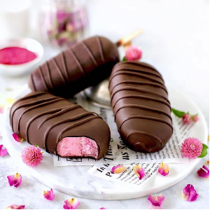

Ingredients
- 1 cup raw cashews (soaked overnight)
- ½ cup coconut cream
- 600 g strawberries
- 5-6 tbsp maple syrup
- 2½ tsp agar agar powder
- ½ pink pitaya powder for the color
Chocolate Dip:
- 200 g dairy-free dark chocolate
- 2 tsp coconut oil
Instructions
- Refrigerate ice cream molds for at least an hour before you begin.
- Take a small pot to mix agar powder and coconut cream. Place the pot on low-medium heat and allow
the mixture to simmer. Stir frequently until the powder dissolves and the mixture thickens (10
mins).
Tip: Work fast since the agar sets quickly.
- Chuck the remaining ingredients into a blender. Blend until they combine, then add the creamy
mixture. Scrape the blender to prevent the ingredients from sticking.
- Blend till you get a smooth creamy texture. Adjust sweetness by adding more maple syrup if
required.
- Pour the mixture into the chilled ice cream molds. Pop them into the freezer to set. (3-4 hours).
- Melt your dark chocolate with coconut oil on top of a warm water bath.
- Once the ice cream is set, dip it into the melted chocolate.
- Pop it back into the freezer. (30 mins)
- Defrost the bars at room temp before serving (min 1 hr)
Source Here